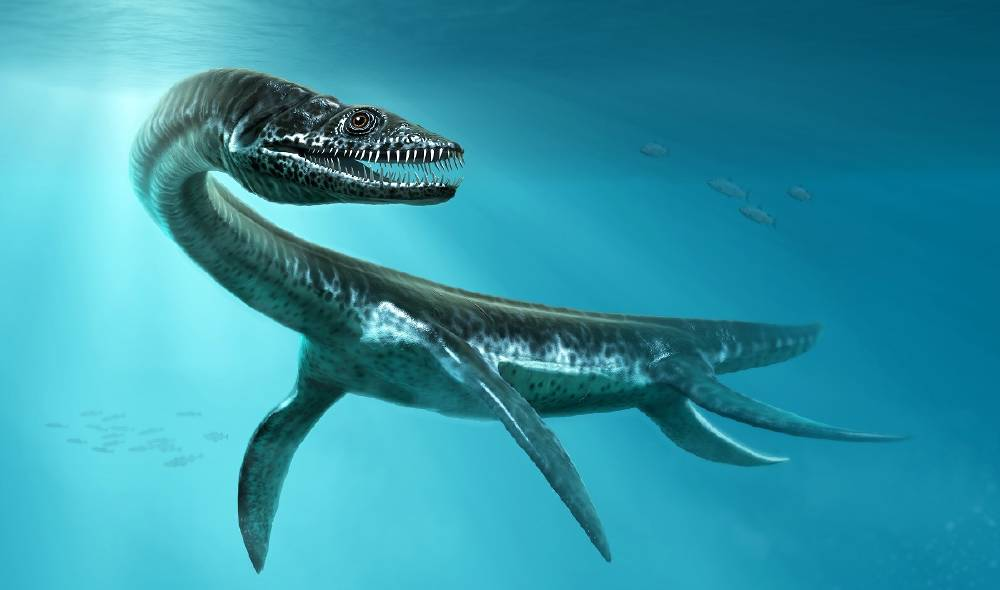
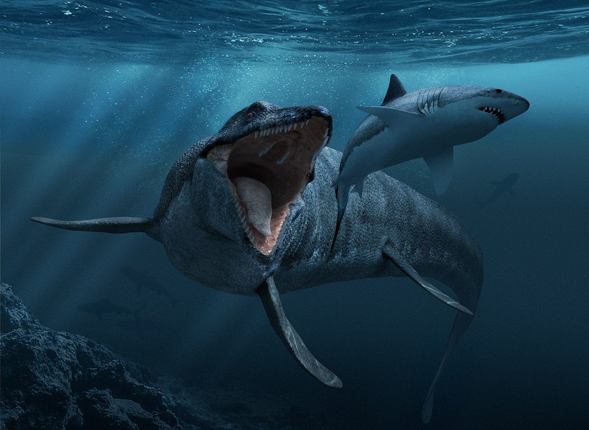
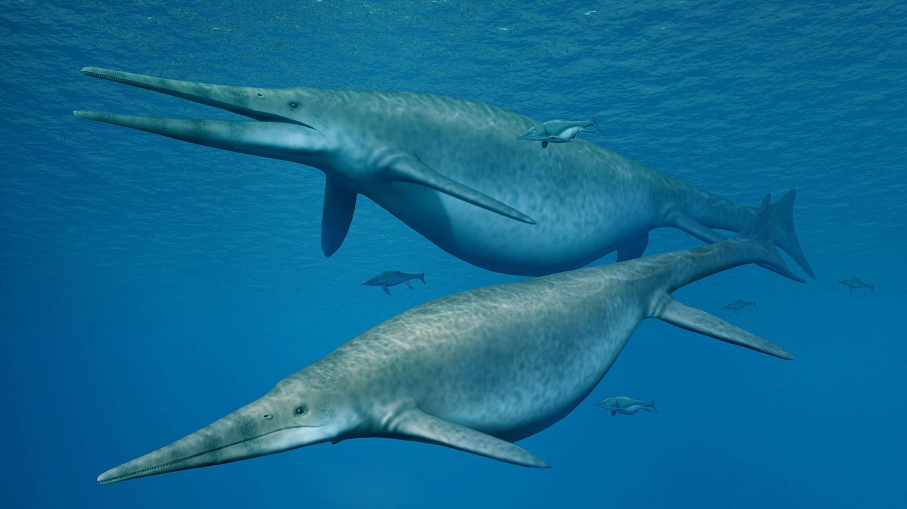

El orden Plesiosauria engloba a algunos de los reptiles marinos más grandes del mundo, con ejemplares de hasta 15 metros de longitud.
Por ello, son habitualmente englobados dentro de los tipos de “dinosaurios marinos”.
Sin embargo, estos animales se extinguieron en el Jurásico, cuando los dinosaurios aún estaban en pleno apogeo.

Plesiosaurio
Mosasaurios
Los mosasaurios (familia Mosasauridae) son un grupo de lagartos (suborden Lacertilia) que fueron
los depredadores marinos dominantes durante el Cretácico. En este periodo, los ictiosaurios y
plesiosaurios ya se habían extinguido.

Mosasaurios
Ictiosaurios
Los ictiosaurios (orden Ichthyosauria) eran un grupo de reptiles con un aspecto similar a los cetáceos y los peces,
sin embargo, no están relacionados. Se trata de una convergencia evolutiva, es decir, adquirieron estructuras semejantes
como resultado de la adaptación al mismo medio.

Ictiosaurios
Usted ha escuchado el termino de leer la letra pequeña refiriendose a teminología legal